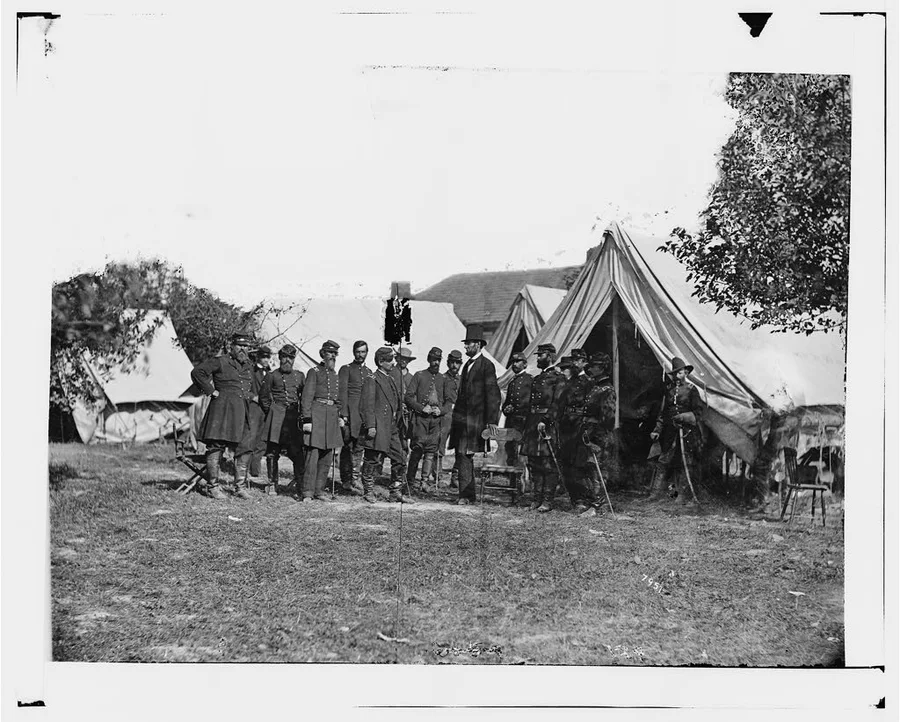
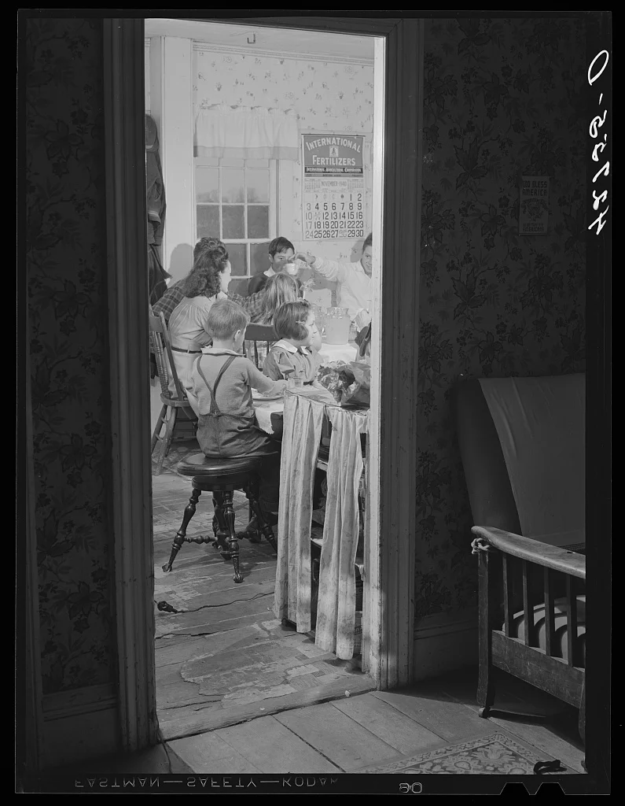
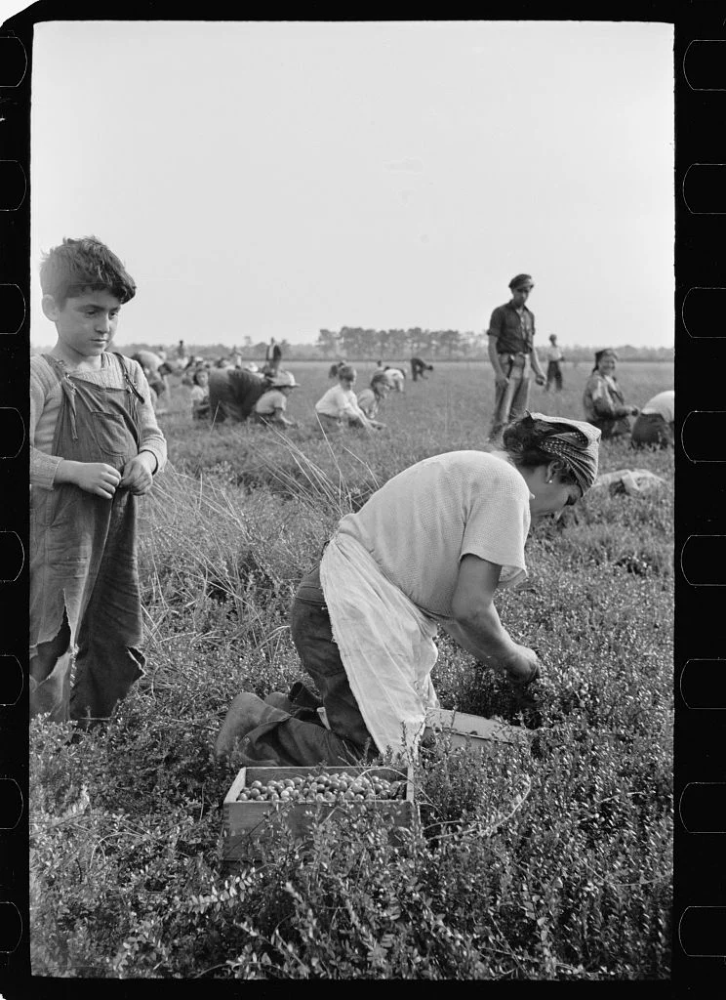
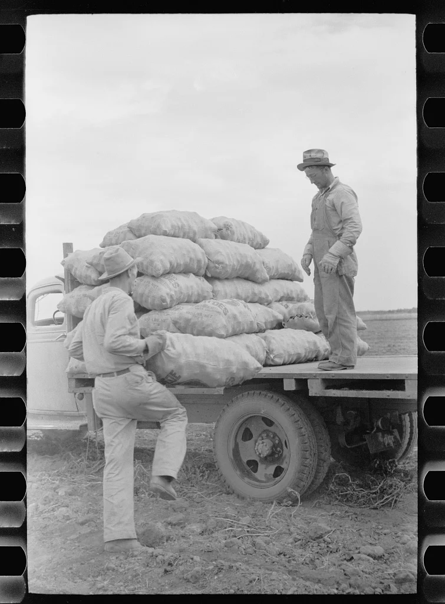

Thanksgiving in Ledyard, Connecticut · 1940
What do you see on the counter? What can you see only in the mirror?
Jack Delano · Library of Congress, FSA/OWI Collection · Public domain · Photo record
Two gatherings on the Atlantic coast
Warm-up · 5 minutes. Look at the photo above. What can it tell you about one family’s Thanksgiving? What would you need to ask someone who was there?
St. Augustine, Florida
Spanish settlers led by Pedro Menéndez de Avilés held a Catholic service of thanksgiving after landing. The National Park Service describes a meal afterward to which Menéndez invited the local Seloy people. The surviving Spanish account gives us little insight into what the Seloy thought.
English settlers built Plymouth on the site of Patuxet, a Wampanoag village devastated by an epidemic before they arrived. In 1621, the Wampanoag leader Ousamequin, also known as Massasoit, and the settlers made an alliance. After the English harvest, Ousamequin and about 90 men joined the settlers during a three-day gathering.
Winslow, an English colonist, described the English hunting birds and the Wampanoag men bringing five deer. His letter leaves open the exact date, whether the Wampanoag had been invited, and most of the menu. In 1841, editor Alexander Young published the account with a note that called the gathering the first Thanksgiving, linking it to the holiday familiar to his readers.
Who set the date?
1789
At Congress’s request, George Washington proclaimed November 26 a day of public thanksgiving. Later presidential proclamations used different dates.
1863
During the Civil War, Abraham Lincoln called for a national day of thanksgiving on the last Thursday of November. Editor Sarah Josepha Hale had urged him to choose a common date.
1939
Franklin D. Roosevelt moved the observance a week earlier to extend the holiday shopping season. Some states kept the old date, so Americans celebrated on two different Thursdays.
1941
Congress passed and Roosevelt signed a law setting the federal holiday on the fourth Thursday of November. When November has five Thursdays, the holiday falls a week before the last one.

Lincoln at Antietam · 1862
The Civil War was still underway when Lincoln issued his proclamation a year later. Why might he have wanted people across the country to observe the same day?
Alexander Gardner · Library of Congress · Public domain · Photo record
The federal holiday falls on a Thursday. Over time, teams, stores, and communities built their own traditions around it.
Thanksgiving Day
Football
Some high schools played Thanksgiving rivalry games decades before the NFL began. In 1934, the Detroit Lions hosted the Chicago Bears on Thanksgiving to draw more fans. A national radio broadcast let people listen from home. The Dallas Cowboys played their first Thanksgiving game in 1966, and both teams became holiday fixtures.
In 1924, Macy’s department store put on a parade in New York City on Thanksgiving morning to usher in the Christmas shopping season. It was originally called the Macy’s Christmas Parade. The giant character balloons that became its signature first appeared in 1927.
Stores use the day after Thanksgiving to promote holiday sales. The shopping name can be traced to Philadelphia, where it described heavy traffic and crowds downtown. Today, retailers also advertise Black Friday deals online, and some promotions start before Friday.
Connect the dates. If Thanksgiving falls on November 28, what date is Black Friday? How does the shopping season help explain both Roosevelt’s decision to move Thanksgiving in 1939 and why stores advertise sales the next day?
What do people remember today?
Many people mark Thanksgiving by sharing food, giving thanks, or helping neighbors. Wampanoag communities continue today. For some Indigenous people, the day is also a time to remember land loss and violence that followed European colonization. The 1621 gathering took place during an alliance. In the decades that followed, English settlement expanded onto Wampanoag lands and relations deteriorated into war.
In 1970, Aquinnah Wampanoag elder Wamsutta Frank James and other Indigenous people and supporters gathered in Plymouth for the first National Day of Mourning. The Thanksgiving Day gathering continues as a time to honor Indigenous ancestors and call attention to Indigenous survival and rights.
Read and discuss · 10 minutes. Find St. Augustine and Plymouth on a classroom map. Explain what each gathering marked and name one detail a surviving account leaves open.
Work in pairs · 15 minutes. For each source, record one detail it supports and one question it leaves open.
Winslow’s 1621 letter. Find a detail about food or guests. What might Winslow have wanted his friend in England to learn about the colony? Read the letter excerpt.
The 1941 law. Find the words that set the date. Use a November calendar to explain why Congress chose “fourth” instead of “last.” See the congressional records.
Delano’s 1940 photographs. Compare the photo at the top with the doorway view. Name a detail each viewpoint helps you notice. What could you find out by interviewing a guest?

At the Crouch family dinner · 1940
This time, Delano photographed the meal from the doorway. Which details came into view when he moved?
Jack Delano · Library of Congress, FSA/OWI Collection · Public domain · Photo record
Check your evidence
Winslow records that the Wampanoag men brought five deer. To learn what those men thought about the gathering, we would need additional evidence. The law explains which Thursday the federal holiday falls on. Delano’s two photos show different parts of the same family meal. An interview could reveal who prepared the food or what the day meant to a guest.
Exit ticket · 5 minutes. Explain how the 1621 gathering, the 1941 law, and the Crouch family dinner each fit into the history of Thanksgiving. Support your answer with details from two sources.
Thanksgiving cooking guide
Try three dishes from modern Thanksgiving menus. These archival photographs show some of the work that went into getting the ingredients to the table.

Picking cranberries · New Jersey, 1938
Workers gathered cranberries by hand in Burlington County. Look for the containers they filled.
Arthur Rothstein · Library of Congress, FSA/OWI Collection · Public domain · Cranberry harvest photo record

Loading potatoes · Colorado, 1939
Workers stack potato sacks for transport in Rio Grande County. What steps still have to happen before the potatoes can be served?
Arthur Rothstein · Library of Congress, FSA/OWI Collection · Public domain · Potato harvest photo record
Plan your cooking order
Bake the pie and make the cranberry sauce the day before so both have time to chill. Make the mashed potatoes shortly before dinner. Wash your hands before cooking and ask an adult to help with knives, the stove, and the oven.
Cranberry sauce
About 15 minutes plus chilling · Makes about 2 cups
Ingredients
12 ounces fresh or frozen cranberries
1 cup water
1 cup granulated sugar
Directions
Rinse the cranberries. Remove stems and discard any spoiled berries.
Bring the water and sugar to a boil in a saucepan, stirring to dissolve the sugar.
Add the berries and return to a boil. Reduce the heat and simmer for about 10 minutes, stirring occasionally, until most berries pop.
Transfer to a heat-safe container and refrigerate. The sauce thickens as it cools.
Scrub and peel the potatoes. Cut them into roughly 1½-inch chunks so they cook evenly.
Cover the chunks with cold water by about 1 inch in a pot and add a pinch of salt. Bring to a boil, then simmer for 15–20 minutes, until a fork slides easily through a chunk.
Have an adult drain the hot water. Return the potatoes to the warm pot and mash with the butter.
Stir in the warm milk a little at a time until the mash is as creamy as you like. Season with salt and pepper.
Pumpkin pie
About 70 minutes plus cooling · Makes 1 pie (8 slices)
Ingredients
1 unbaked 9-inch deep-dish pie shell (4-cup capacity)
1 can plain pumpkin purée (15 ounces)
1 can evaporated milk (12 fluid ounces)
2 large eggs
¾ cup granulated sugar
1 teaspoon ground cinnamon
½ teaspoon each ground ginger and salt
¼ teaspoon ground cloves
Directions
Heat the oven to 425°F (220°C). Set the pie shell on a rimmed baking sheet.
Whisk the eggs in a large bowl. Mix in the pumpkin, sugar, spices, and salt, then gradually whisk in the evaporated milk.
Pour the filling into the shell. Bake for 15 minutes, then lower the oven to 350°F (175°C) and bake for about 40 minutes more. The pie is ready when a knife inserted near the center comes out clean.
Cool on a wire rack and refrigerate within two hours of baking. Chill until ready to slice.
Serving turkey or saving leftovers? Use a food thermometer to check that turkey reaches 165°F (74°C) in the thickest part of the breast and the innermost parts of the thigh and wing. Refrigerate perishable leftovers in shallow containers within two hours, or within one hour when temperatures are above 90°F (32°C). Read the holiday food safety guide.